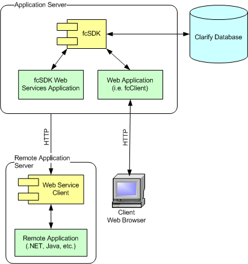
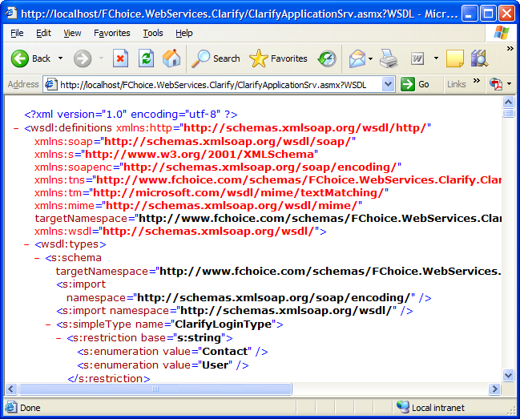

This walkthrough will provide an overview of the basic usage pattern involved in using the Dovetail Web Services.
A typical web service scenario is composed of two parts: the server which hosts the web services and the client or clients who will make request and receive responses from those web services. The web service server will be the machine where the fcSDK is installed which is also typically a web application server. The Dovetail Web Services is an ASP.NET web application runing under IIS.
Making web service calls is not unlike making browser request to a web page. The main difference being that web service calls are generally made from applications instead of a client browser. Just as a web application can provide a user interface into fcSDK, the Dovetail Web Services provides a programmatically way to interface with fcSDK from a remote machine.

Web services may be consumed by any language or platform that can send requests and receive responses over HTTP. This makes it possible to use Java to call .NET web services such as the Dovetail Web Services.
The Dovetail Web Services are implemented as typical ASP.NET Web Services. The following web service pages are installed as part of the Dovetail Web Services installation.
To retrieve the WSDL (Web Service Description Language) for a particular web service, all you have to do is make an HTTP request to the web service page with '?WSDL' appended to the end of the URL. For example, if you would like the WSDL for the ClarifyApplicationSrv web service you would do something like the following:

Replace 'localhost' with the Dovetail Web Services server and 'FChoice.WebServices.Clarify' with the correct virtual directory where the web services are installed.If you are using the Dovetail Web Services Client for .NET to access the web services, then you probably will not need to use the WSDLs for the web services.
Web services are composed of requests and responses. Each of these is a XML message which is transported over HTTP using the SOAP protocol. Many of the messages contain nested data structures (called complex types) which define the data needed for a particular request or response. The client and server components of these web services generally transform these data structures into a hierarchy of classes which make them easier to deal with programmatically. The process of converting classes to XML data structures is call serialization and the process of converting the XML data structures back to classes is called deserialization. When using modern languages like .NET and Java, this is all handled for you. If you are using a platform that does not provide tools to do serialization, then you may need to write your own.
Because there are limits on what types may be serialized, it is often necessary to create a class that its sole purpose is to be used to transport data in requests and responses for web services. This is the case for many of the types in Dovetail Web Services.
For example, in the FChoice.Toolkit.Clarify.Support namespaces there are setup objects for each of the toolkit APIs that allow one to specify invocation data for a particular API. To extend this behavior to a web service implementation, protocol classes where created for each of these setup object. The Dovetail Web Services use these protocol objects for input parameters and for return results.
[C#]
// Signature for standard SupportToolkit.CreateCase() |
The web services convert these protocol classes to the real type counterparts which are passed in to the underlying fcSDK API during invocation. As shown in the previous example, many results are returned as protocol objects which contain properties that are nearly identical to there non-protocol counterpart.
The ClarifyApplication Web Service ( ClarifyApplicationSrv ) is the starting point for all client applications consuming the Dovetail Web Services. From here CreateSession() is called to create a ClarifySession on the web services server which will live until either Logout() is called on the ClarifySessionSrv, or a configurable timeout period is reached. This method returns an authentication token which will be passed in the SOAP header of each web service call which requires authentication. The server will read the authentication token from the SOAP header and match it back up to a ClarifySession that was previously created using ClarifyApplicationWS.CreateSession(). If it can not find a ClarifySession to match to due to invalid authentication token or an expired session, the API will throw an exception. Each ClarifySession consumes a fcSDK license, so it's important to call Logout() on the Clarify Session Web Service after use so that the license can be released. If you are using the Dovetail Web Services Client for .NET, then the SOAP headers and the controlling of authentication token is handled for you.
The recommended way to use the Dovetail Web Services in a .NET environment is to use the provided client which ships with the fcSDK. The client makes writing code to use the web services very similar to writing code to use native fcSDK.
The client classes completely hide the complexities of the SOAP headers and the session authentication token. They also provide required state information to the web services such as which properties have been changed from their original values on the toolkit setup objects.
Protocol classes only have default public constructor with no parameters (requirement for serialization) which makes it difficult to determine which values of a complex type are required before invocation. The Dovetail Web Services Client solves this problem by providing the user with a client side API (which looks nearly identical to server side fcSDK code) which handles the creation and transport of the protocol classes under the hood.
The client contains all the protocol classes needed to transport data to and from the server. Each web service page (each asmx page) has it's own version of a protocol class. These protocol classes live in the following namespaces:
The base client classes live in the FChoice.WebServices.Clarify.Client namespace.
The starting point in engaging the web service client is to create an instance of the ClarifyApplicationWS class which takes a single parameter that is the URL of the location where the Dovetail Web Services were installed.
[C#]
ClarifyApplicationWS application = new ClarifyApplicationWS("http://myserver/FChoice.WebServices.Clarify/"); |
There are several methods that can be called on ClarifyApplicationWS for getting application related information such as retrieve list from the ListCache. Please see ClarifyApplicationWS for more details.
As with standard fcSDK, you create a session object by calling CreateSession().
[C#]
ClarifyApplicationWS application = new ClarifyApplicationWS("http://myserver/FChoice.WebServices.Clarify/"); |
There are several methods that can be called on ClarifySessionWS for getting session related information such as getting the current time zone.
The ClarifyDataAccessWS class provides a means of doing ClarifyGeneric queries and data modifications. Please refer to the Accessing Data with the Web Services guide for more details.
The Dovetail Web Services Client contains toolkit classes for each of the fcSDK API Toolkit classes which live under their own namespaces as follows:
Each of these toolkit classes can be instantiated by passing a valid ClarifySessionWS.
[C#]
SupportToolkitWS supportWS = new SupportToolkitWS( session ); |
You may then call the non setup APIs directly.
[C#]
ToolkitResultProtocol result = supportWS.CreateCase(siteIDNum, firstName, lastName, phone); |
The toolkit API result will contain the same properties as the result of the equivalent fcSDK toolkit API.
[C#]
Console.WriteLine("IDNum : {0}", result.IDNum ); |
The output should look something like the following:
IDNum : 123456 Objid : 268435499 ReturnCode : 0
You may also choose to create a setup object to pass into the API just as you would with the native fcSDK API Toolkits. The following is a more complete example:
[C#]
// Create ClarifyApplicationWS |
The output should look something like the following:
IDNum : 123456 Objid : 268435499 ReturnCode : 0